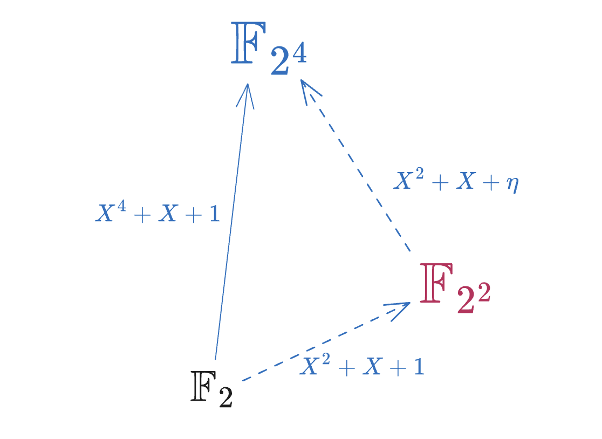
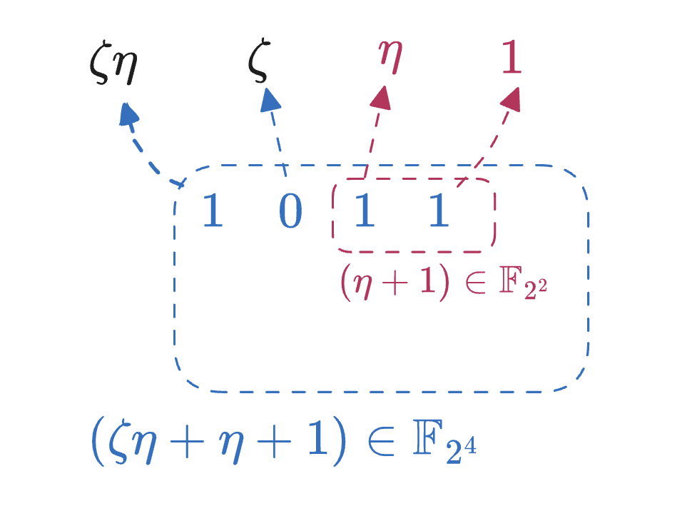

Notes on FRI-Binius (Part I): Binary Towers
Check the latest on mle-pcs repo: https://github.com/sec-bit/mle-pcs/blob/main/fri-binius/binius-01.md
- Yu Guo yu.guo@secbit.io
- Jade Xie jade@secbit.io
Binary fields possess elegant internal structures, and Binius aims to fully utilize these internal structures to construct efficient SNARK proof systems. This article mainly discusses the Binary Fields that Binius relies on at its core and the construction methods of Extension Towers based on Binary Fields. Binary Fields provide smaller fields and are compatible with various tool constructions in traditional cryptography while also being able to fully utilize optimization of special instructions on hardware. There are two main advantages to choosing Extension Towers: one is that the recursive Extension construction provides a consistent and incremental Basis selection, allowing Small Fields to be embedded into Large Fields in a very natural way; the other advantage is that multiplication and inversion operations have efficient recursive algorithms.
Extension Fields
Let’s try to describe the concept of Extension Fields in simple language to lay the groundwork for our study of Binary Towers. For in-depth learning, please refer to the strict definitions and proofs in finite field textbooks.
The prime field $\mathbb{F}_{p}$ is a finite field with $p$ elements, where $p$ must be a prime number. It is isomorphic to $\mathbb{Z}/p\mathbb{Z}$, which means we can use the set of integers $\{0, 1, \ldots, p-1\}$ to represent all elements of $\mathbb{F}_p$.
We can form a Tuple with any two elements from the prime field, i.e., $(a, b)\in\mathbb{F}_{p}^2$, and this Tuple also forms a field with $p^2$ elements. We can verify this: $a+b\in\mathbb{F}_p$, so we define the addition of Tuples as follows:
$$ (a_1, b_1) + (a_2, b_2) = (a_1 + a_2, b_1 + b_2) $$We can verify that $\mathbb{F}_{p}^2$ forms a vector space, thus it is an additive group with the zero element being $(0, 0)$. The next question is how to define multiplication. We want multiplication to be closed, i.e.:
$$ (a_1, b_1)\cdot (a_2, b_2) = (c, d) $$The simplest approach would be to use Entry-wise Multiplication to define multiplication, i.e., $(a_1, b_1)\cdot (a_2, b_2) = (a_1a_2, b_1b_2)$, with the multiplicative identity being $(1, 1)$. This seems to make multiplication closed. However, this doesn’t ensure that every element has an inverse. For example, $(1, 0)$ multiplied by any Tuple can never result in $(1, 1)$, because the second part of the Tuple will always be $0$. Therefore, this kind of multiplication cannot form a “field”.
In finite field theory, the multiplication operation of Tuples is implemented through polynomial modular multiplication. That is, we view $(a_1, b_1)$ as the coefficients of a degree 1 polynomial, and similarly $(a_2, b_2)$ can be viewed as the coefficients of another degree 1 polynomial. By multiplying these two, we get a degree 2 polynomial:
$$ (a_1 + b_1\cdot X) \cdot (a_2 + b_2\cdot X) = a_1a_2 + (a_1b_2 + a_2b_1)X + b_1b_2X^2 $$Then we take the modulus of the resulting polynomial with an irreducible degree 2 polynomial $f(X)$, obtaining a remainder polynomial. The coefficients of this remainder polynomial are $(c, d)$. So we define the new Tuple multiplication as follows:
$$ (a_1 + b_1\cdot X) \cdot (a_2 + b_2\cdot X) = c + d\cdot X \mod f(X) $$And we define $(1, 0)$ as the multiplicative identity. Here we emphasize that $f(X)$ must be an irreducible polynomial. What would happen if $f(X)$ were a reducible polynomial? For instance, if $f(X)=(u_1+u_2X)(v_1+v_2X)$, then the product of two non-zero elements $(u_1, u_2)$ and $(v_1, v_2)$ would equal $(0, 0)$, breaking out of the multiplicative group. Strictly speaking, the appearance of Zero Divisors disrupts the structure of the multiplicative group, thus failing to form a “field”.
The next question is whether there exists an irreducible degree 2 polynomial $f(X)$. If $f(X)$ doesn’t exist, then constructing a field $\mathbb{F}_{p^2}$ would be out of the question. For the prime field $\mathbb{F}_p$, take any $w\in\mathbb{F}_p$ that is not a square of any element, which in number theory belongs to the non-quadratic residue class, i.e., $w\in QNR(p)$. If $w$ exists, then $f(X)=X^2-w$ is an irreducible polynomial. Furthermore, how is the existence of $w$ guaranteed? If $p$ is an odd number, then $w$ must exist. If $p=2$, although $w$ doesn’t exist, we can specify $f(X)=X^2+X+1\in\mathbb{F}_2[X]$ as an irreducible polynomial.
We now denote the field formed by the set of Tuples $\mathbb{F}_{p}^2$, along with the defined addition and multiplication operations, as $\mathbb{F}_{p^2}$, which has $p^2$ elements. According to finite field theory, we can expand the binary Tuple to an $n$-ary Tuple, thus constructing larger finite fields $\mathbb{F}_{p^n}$.
For an irreducible polynomial $f(X) = c_0 + c_1X + X^2$ over $\mathbb{F}_p$, it can always be factored in $\mathbb{F}_{p^2}$. $f(X) = (X-\alpha)(X-\alpha')$, where $\alpha$ and $\alpha'$ are conjugates of each other, and they both belong to $\mathbb{F}_{p^2}$ but not to $\mathbb{F}_p$. According to the definition of extension fields, $\mathbb{F}_p(\alpha)$ is a degree 2 algebraic extension, which is isomorphic to the finite field we constructed earlier through modular multiplication with an irreducible polynomial. Therefore, we can also use $a_1 + a_2\cdot\alpha$ to represent any element in $\mathbb{F}_{p^2}$. Or further, we can view $(1, \alpha)$ as a Basis of the $\mathbb{F}_{p^2}$ vector space, any $a\in \mathbb{F}_{p^2}$ can be represented as a linear combination of the Basis:
$$ a = a_0 \cdot 1 + a_1 \cdot \alpha, \quad a_0, a_1\in\mathbb{F}_p $$This way, we can use the symbol $a_0 + a_1\cdot \alpha$ to represent elements in $\mathbb{F}_{p^2}$, rather than the polynomial representation $a_0 + a_1\cdot X$. The “polynomial representation” of elements doesn’t specify which irreducible polynomial we used to construct the extension field, while using $\alpha$, the root of the irreducible polynomial, as a way to construct the extension field eliminates any ambiguity.
Generalizing this concept to $\mathbb{F}_{p^n}$, for any element $a\in\mathbb{F}_{p^n}$, it can be represented as:
$$ a = a_0 + a_1\cdot\alpha + a_2\cdot\alpha^2 + \cdots + a_{n-1}\cdot\alpha^{n-1} $$Here $\alpha$ is the root of the degree $n$ irreducible polynomial $f(X)$. Therefore, $(1, \alpha, \alpha^2, \cdots, \alpha^{n-1})$ can be viewed as a Basis of $\mathbb{F}_{p^n}$, and this Basis is called the Polynomial Basis of the finite field. Note that $\mathbb{F}_{p^n}$ as an $n$-dimensional vector space has many different Bases. We will see later that the choice of Basis is a very important step, and an appropriate Basis can greatly optimize or simplify some representations or operations.
TODO: Fp* multiplicative cyclic group
Binary Field
For $\mathbb{F}_{2^n}$, we call it a binary field because its elements can all be expressed as vectors of length $n$ composed of $0$ and $1$. $\mathbb{F}_{2^n}$ can be constructed through two types of methods: one is through an irreducible polynomial of degree $n$; the other is by repeatedly using quadratic extensions, known as an Extension Tower. There are many paths for field extension, and for $2^n$, it has multiple factors of 2, so there exist multiple construction methods between these two methods. For example, for $\mathbb{F}_{2^8}$, we can first construct $\mathbb{F}_{2^4}$, then obtain $\mathbb{F}_{2^8}$ through a quadratic extension, or we can first construct $\mathbb{F}_{2^2}$, then construct $\mathbb{F}_{2^8}$ through a quartic irreducible polynomial extension.
Let’s warm up by constructing $\mathbb{F}_{2^2}$ using the quadratic extension method. We discussed earlier that $f(X)=X^2+X+1$ is an irreducible polynomial in $\mathbb{F}_2[X]$. Suppose $\eta$ is a root of $f(X)$, then $\mathbb{F}_{2^2}$ can be represented as $a_0 + b_0\cdot\eta$. Considering that $\mathbb{F}_{2^2}$ only has four elements, they can be listed below:
$$ \mathbb{F}_{2^2} = \{0, 1, \eta, \eta+1\} $$And $\eta$ as a generator can produce the multiplicative group $\mathbb{F}_{2^2}^*=\langle \eta \rangle$, which has an Order of 3:
$$ \begin{split} \eta^0 &= 1 \\ \eta^1 &= \eta \\ \eta^2 &= \eta+1 \\ \end{split} $$We’ll demonstrate two construction methods for $\mathbb{F}_{2^4}$. The first is to directly use a degree 4 irreducible polynomial over $\mathbb{F}_2$. In fact, there are 3 different degree 4 irreducible polynomials, so there are 3 different construction methods in total.
$$ \begin{split} f_1(X) &= X^4 + X + 1 \\ f_2(X) &= X^4 + X^3 + 1 \\ f_3(X) &= X^4 + X^3 + X^2 + X + 1 \\ \end{split} $$Since we only need to choose one irreducible polynomial, let’s choose $f_1(X)$ to define $\mathbb{F}_{2^4}$:
$$ \mathbb{F}_{2^4} = \mathbb{F}_2[X]/\langle f_1(X)\rangle $$Let’s denote the root of $f_1(X)$ in $\mathbb{F}_{2^4}$ as $\theta$, then any element $a\in\mathbb{F}_{2^4}$ can be uniquely represented as:
$$ a = a_0 + a_1\cdot\theta + a_2\cdot\theta^2 + \cdots + a_{n-1}\cdot\theta^{n-1} $$To add here, $f_1(X)$ is also a Primitive polynomial, and its root $\theta$ is also a Primitive Element of $\mathbb{F}_{2^4}$. Note that not all irreducible polynomials are Primitive polynomials, for example, $f_3(X)$ listed above is not a Primitive polynomial.
Now we can list all the elements in $\mathbb{F}_{2^4}$, each element corresponding to a 4-bit binary vector:
$$ \begin{array}{ccccccc} 0000 & 0001 & 0010 & 0011 & 0100 & 0101 & 0110 & 0111 \\ 0 & 1 & \theta & \theta+1 & \theta^2 & \theta^2+1 & \theta^2+\theta & \theta^2+\theta+1 \\ \hline 1000 & 1001 & 1010 & 1011 & 1100 & 1101 & 1110 & 1111 \\ \theta^3 & \theta^3+1 & \theta^3+\theta & \theta^3+\theta+1 & \theta^3+\theta^2 & \theta^3+\theta^2+1 & \theta^3+\theta^2+\theta & \theta^3+\theta^2+\theta+1 \\ \end{array} $$For the addition of two elements in $\mathbb{F}_{2^4}$, we only need to add their binary representations bit by bit, for example:
$$ (0101) + (1111) = (1010) $$This operation is actually the XOR bitwise exclusive OR operation. As for multiplication, for example $a\cdot\theta$, it corresponds to a shift operation on the binary:
$$ \begin{split} (0101) << 1 &= (1010)\\ (\theta^2 + 1)\cdot\theta &= \theta^3 + \theta \\ \end{split} $$If we continue to multiply by $\theta$, a shift overflow situation will occur:
$$ \begin{split} (\theta^3 + \theta)\cdot\theta &= {\color{blue}\theta^4} + \theta^2 = \theta^2 + \theta + 1 \\ (1010) << 1 &= (0100) + (0011) = (0111)\\ \end{split} $$For the overflow bit, it needs to be added with $0011$, which is determined by the definition of the irreducible polynomial $f_1(X)$, $\theta^4=\theta+1$. So once the high bit overflows during shifting, an XOR operation with $0011$ needs to be performed. From this, we can see that the multiplication rules of $\mathbb{F}_{2^4}$ actually depend on the choice of the irreducible polynomial. Therefore, how to choose an appropriate irreducible polynomial is also a key step in optimizing binary field multiplication.
Field Embedding
If we want to construct a SNARK proof system based on binary fields, we would use smaller bit counts to represent smaller numbers, but in any case, in the challenge rounds of the protocol, the Verifier needs to give a random number in a relatively large extension field, in hopes of achieving sufficient cryptographic security strength. This requires us to encode witness information with polynomials in a small field, but perform evaluation operations on these polynomials in a larger field. Therefore, we need to find a way to “embed” the small field $K$ into the large field $L$.
The so-called embedding refers to mapping elements from one field $K$ to another field $L$, denoted as $\phi: K\to L$. This mapping is Injective and this homomorphism mapping preserves the structure of addition and multiplication operations:
$$ \begin{split} \phi(a+b) &= \phi(a) + \phi(b) \\ \phi(a\cdot b) &= \phi(a)\cdot\phi(b) \end{split} $$That is, if $a\in K$, then $a$ also has a unique representation in $L$. To maintain the structure of multiplication operations, we actually only need to find a Primitive Element $\alpha$ in K corresponding to an element $\beta$ in $L$, then this homomorphism mapping is uniquely determined, because any element in $K$ can be represented as a power of $\alpha$. However, usually this embedding homomorphism mapping is not easy to find. Let’s take $\mathbb{F}_{2^2}\subset\mathbb{F}_{2^4}$ as an example to see how to find the mapping of the former embedded into the latter.
Because $\eta$ is a Primitive Element in $\mathbb{F}_{2^2}$, we only need to consider the representation of $\eta$ in $\mathbb{F}_{2^4}$.
Let’s first look at the Primitive Element $\theta$ in $\mathbb{F}_{2^4}$, is $\eta\mapsto\theta$ an embedding mapping?
$$ \eta^2 = \eta+1 \quad \text{but} \quad \theta^2 \neq \theta+1 $$Obviously, $\eta^2 \neq \theta^2$, so $\eta\mapsto\theta$ is not an embedding mapping. Thinking about how irreducible polynomials determine the multiplication relationship between elements, and because $\eta$ is a root of $X^2+X+1$ while $\theta$ is a root of $X^4+X+1$, the multiplication relationship between $\eta$ and $\theta$ must be different. In $\mathbb{F}_{2^4}$, there also exist two roots of $X^2+X+1$, which are $\theta^2+\theta$ and $\theta^2+\theta+1$ respectively. Readers can verify the following equation:
$$ (\theta^2+\theta)^2 + (\theta^2+\theta) + 1 = \theta^4 + \theta^2 + \theta^2 + \theta + 1 = 0 $$So, we define the embedding mapping:
$$ \begin{split} \phi &: \mathbb{F}_{2^2} \to \mathbb{F}_{2^4},\quad \eta \mapsto \theta^2+\theta \end{split} $$This means that the binary representation $(10)$ corresponds to $(0110)$ in $L=\mathbb{F}_{2^4}$; and the binary representation $(11)$ (which is $\eta+1$) corresponds to $(\theta^2+\theta+1)$ in $L$, i.e., $(0111)$. Note here that we can also use $\phi': \eta \mapsto \theta^2+\theta+1$ as another different embedding mapping. The underlying principle is that $\theta^2+\theta$ and $\theta^2+\theta+1$ are conjugates of each other, they are perfectly symmetric, so both of these mappings can serve as embedding mappings. Although they map to different elements, there is no significant difference from the overall structure.
For any $[L:K]=n$, when we embed $K$ into $L$, a direct method is to find the roots of $f(X)$ in $L$, although this calculation is not simple. Moreover, both embedding and de-embedding require additional calculations, which undoubtedly increases the complexity of the system.
The recursive Extension Tower construction method mentioned in the Binius paper, by selecting appropriate irreducible polynomials and Bases, we can obtain very direct (called Zero-cost) embedding and de-embedding mappings.
Extension Tower
We can construct $\mathbb{F}_{2^4}$ through two quadratic extensions. First, we choose a quadratic irreducible polynomial $f(X)=X^2+X+1$, then we can construct $\mathbb{F}_{2^2}$, then based on $\mathbb{F}_{2^2}$ we find another quadratic irreducible polynomial to construct $\mathbb{F}_{2^4}$.
$$ \mathbb{F}_{2^2} = \mathbb{F}_2[X]/\langle X^2+X+1 \rangle \cong\mathbb{F}_2(\eta) $$Next, we need to find a quadratic irreducible polynomial in $\mathbb{F}_{2^2}[X]$. First note that $X^2+X+1$ can no longer be used, according to the definition of $\mathbb{F}_{2^2}$, it can already be factored. Consider $X^2+1$, it can also be factored $(X+1)(X+1)$. In fact, all quadratic polynomials in $\mathbb{F}_2[X]$ can be factored. A quadratic irreducible polynomial in $\mathbb{F}_{2^2}[X]$ must include a term with the new element $\eta$ in its coefficients.
For example, $X^2+X+\eta$ is a quadratic irreducible polynomial over $\mathbb{F}_{2^2}$. Then we can construct $\mathbb{F}_{2^4}$:
$$ \mathbb{F}_{2^4} = \mathbb{F}_{2^2}[X]/\langle X^2+X+\eta \rangle $$Let’s denote the root of $X^2+X+\eta$ in $\mathbb{F}_{2^4}$ as $\zeta$, then $\mathbb{F}_{2^4}$ can be represented as:
$$ \mathbb{F}_{2^4} = \cong \mathbb{F}_{2^2}(\zeta) \cong \mathbb{F}_2(\eta)(\zeta) \cong \mathbb{F}_2(\eta, \zeta) $$
Then all elements of $\mathbb{F}_{2^4}$ can be represented using $\eta, \zeta$:
$$ \begin{array}{ccccccc} \hline 0000 & 0001 & 0010 & 0011 & 0100 & 0101 & 0110 & 0111 \\ 0 & 1 & \eta & \eta+1 & \zeta & \zeta+\eta & \zeta+\eta+1 & \zeta+\eta+1 \\ \hline 1000 & 1001 & 1010 & 1011 & 1100 & 1101 & 1110 & 1111 \\ \zeta\eta & \zeta\eta + 1 & \zeta\eta + \eta & \zeta\eta + \eta + 1 & \zeta\eta + \zeta & \zeta\eta + \zeta +1 & \zeta\eta+\zeta+\eta & \zeta\eta+\zeta+\eta+1 \\ \hline \end{array} $$At this point, each bit in the 4-bit binary corresponds to an element in $\mathbb{F}_{2^4}$, $(1000)$ corresponds to $\zeta\eta$, $(0100)$ corresponds to $\zeta$, $(0010)$ corresponds to $\eta$, $(0001)$ corresponds to $1$. Therefore, we can use the following Basis to represent all elements in $\mathbb{F}_{2^4}$:
$$ \mathcal{B} = (1,\ \eta,\ \zeta,\ \eta\zeta) $$Now, the binary representation of $\mathbb{F}_{2^2}$ directly corresponds to the “lower two bits” of the binary representation of $\mathbb{F}_{2^4}$, for example:
$$ \begin{split} (1010) &= (10) || (10) = \zeta\eta + \eta \\ \end{split} $$Therefore, we can directly pad zeros to the higher two bits of the binary representation of $\mathbb{F}_{2^2}$ to get the corresponding element in $\mathbb{F}_{2^4}$. Conversely, by removing the two high-order zeros, an element in $\mathbb{F}_{2^4}$ directly maps back to an element in $\mathbb{F}_{2^2}$.

As shown in the figure above, $(1011)$ is the binary representation of $\zeta\eta+\eta+1$, its lower two bits $(11)$ directly correspond to $(\eta+1)$ in $\mathbb{F}_{2^2}$. This kind of embedding is a “natural embedding”, so the Binus paper calls it Zero-cost Embedding.
However, $\mathbb{F}_{2^4}$ is still a very small field, not enough. If we continue to perform quadratic extensions upwards, how can we find suitable irreducible polynomials? The solution is not unique. Let’s first look at a scheme given in the Binius paper [DP23] — Wiedemann Tower [Wie88].
Wiedemann Tower
The Wiedemann Tower is a recursive extension tower based on $\mathbb{F}_2$. The bottom Base Field is denoted as $\mathcal{T}_0$, with elements only $0$ and $1$:
$$ \mathcal{T}_0 = \mathbb{F}_2 \cong \{0,1\} $$Then we introduce an unknown $X_0$, constructing a univariate polynomial ring $\mathbb{F}_2[X_0]$. As discussed earlier, $X^2 + X + 1$ is an irreducible polynomial over $\mathcal{T}_0$, so we can use it to construct $\mathcal{T}_1$.
$$ \mathcal{T}_1 = \mathbb{F}_2[X_0]/\langle X_0^2+X_0+1 \rangle = \{0, 1, X_0, X_0+1\} \cong \mathbb{F}_{2^2} \cong \mathbb{F}_2(\alpha_0) $$Next, we find a quadratic irreducible polynomial $X_1^2+\alpha_0\cdot X_1+1$ in $\mathcal{T}_1[X_1]$, then we can construct $\mathcal{T}_2$:
$$ \mathcal{T}_2 = \mathcal{T}_1[X_1]/\langle X_1^2+ \alpha_0\cdot X_1+1\rangle \cong \mathbb{F}_{2^4} \cong \mathbb{F}_2(\alpha_0, \alpha_1) $$And so on, we can construct $\mathcal{T}_3, \mathcal{T}_4, \cdots, \mathcal{T}_n$:
$$ \mathcal{T}_{i+1} = \mathcal{T}_i[X_i]/\langle X_i^2+\alpha_{i-1}\cdot X_i+1\rangle \cong \mathbb{F}_{2^{2^i}} \cong \mathbb{F}_2(\alpha_0, \alpha_1, \ldots, \alpha_i),\quad i\geq 1 $$Here, $\alpha_0, \alpha_1, \ldots, \alpha_{n-1}$ are the roots of the successively introduced quadratic irreducible polynomials, such that:
$$ \mathcal{T}_{n} = \mathbb{F}_2(\alpha_0, \alpha_1, \ldots, \alpha_{n-1}) $$And $|\mathcal{T}_{n}| = 2^{2^{n}}$. The relationship between these introduced roots satisfies the following equation:
$$ \alpha_{i+1} + \alpha^{-1}_{i+1} = \alpha_i $$It’s not hard to verify that $\alpha_0+\alpha^{-1}_0=1$. And the polynomial $X_i^2+X_{i-1}X_i+1$ in the multivariate polynomial ring $\mathcal{T}_0[X_0, X_1, \ldots, X_n]$ has two roots $\alpha_i$ and $\alpha^{-1}_i$:
$$ (\alpha^{-1}_i)^2 + \alpha_{i-1}\alpha^{-1}_i + 1 = \alpha^{-1}_i + \alpha_{i-1} + \alpha_i = \alpha_{i-1} + \alpha_{i-1} = 0 $$Moreover, $\alpha_i$ and $\alpha_{i+1}$ satisfy the following recursive relationship:
$$ \alpha_{i+1} + \alpha^{-1}_{i+1} = \alpha_i $$This is because if we multiply both sides of the equation by $\alpha_{i+1}$, we get: $\alpha_{i+1}^2 + \alpha_i\alpha_{i+1} + 1 = 0$, which is exactly the irreducible polynomial we use for recursive quadratic extension construction.
Multilinear Basis
For $\mathcal{T}_{i+1}$ over $\mathbb{F}_2$, it forms an $n+1$ dimensional vector space over $\mathbb{F}_2$. We can use the roots of these irreducible polynomials to construct a Multilinear Basis:
$$ \begin{split} \mathcal{B}_{i+1} &= (1, \alpha_0)\otimes (1, \alpha_1) \otimes \cdots \otimes (1,\alpha_i) \\ & = (1, \alpha_0, \alpha_1, \alpha_0\alpha_1, \alpha_2,\ \ldots,\ \alpha_0\alpha_1\cdots \alpha_i) \end{split} $$This is consistent with what we discussed earlier, using $(1, \eta, \zeta, \zeta\eta)$ as the Basis for $\mathbb{F}_{2}(\eta, \zeta)$. We can quickly verify this. First, $(1, \alpha_0)$ is the Basis of $\mathcal{T}_1$, because every element of $\mathcal{T}_1$ can be expressed as
$$ a_0 + b_0\cdot \alpha_0, \quad a_0, b_0\in\mathcal{T}_0 $$After $\mathcal{T}_1$ is extended to $\mathcal{T}_2$ through $\alpha_1$, elements of $\mathcal{T}_2$ can all be expressed as:
$$ a_1 + b_1\cdot \alpha_1, \quad a_1, b_1\in\mathcal{T}_1 $$Substituting $a_1=a_0+b_0\cdot \alpha_0$, $b_1=a_0'+b_0'\cdot \alpha_1$, we have:
$$ \begin{split} a_1 + b_1\cdot \alpha_1 &= (a_0+b_0\cdot \alpha_0) + (a'_0+b'_0\cdot \alpha_0)\cdot \alpha_1 \\ &= a_0 + b_0\alpha_0 + a'_0\cdot\alpha_1+ b_0'\cdot \alpha_0\alpha_1 \end{split} $$Thus, $(1, \alpha_0, \alpha_1, \alpha_0\alpha_1)$ forms the Basis of $\mathcal{T}_2$. By extension, $(1, \alpha_0, \alpha_1, \alpha_0\alpha_1, \alpha_2, \alpha_0\alpha_2, \alpha_1\alpha_2, \alpha_0\alpha_1\alpha_2)$ is the Basis of $\mathcal{T}_3$. Finally, $\mathcal{B}_{n}$ is the Basis of $\mathcal{T}_{n}$.
Finding Primitive element
We discussed earlier that $\alpha_i$ and $\alpha^{-1}_{i}$ are conjugate roots. By Galois theory,
$$ \alpha_{i}^{2^{2^n}} = \alpha^{-1}_{i} $$Then all $\alpha_i$ satisfy the following property:
$$ \alpha_i^{F_i} = 1 $$Here $F_n$ represents the Fermat Number, $F_n=2^{2^n}+1$. A famous theorem is that $\mathsf{gcd}(F_i, F_j) = 1, i\neq j$, that is, any two different Fermat numbers are coprime, so
$$ \mathsf{ord}(\alpha_0\alpha_1\cdots \alpha_i) = \mathsf{ord}(\alpha_0)\mathsf{ord}(\alpha_1)\cdots\mathsf{ord}(\alpha_i) $$Therefore, if the Fermat number $F_i$ is prime, then obviously $\mathsf{ord}(\alpha_i)=F_i$. Currently, we know that when $i\leq 4$, $F_i$ are all prime, so
$$ \begin{split} \mathsf{ord}(\alpha_0\cdot \alpha_1\cdot \cdots \cdot \alpha_i) &= \mathsf{ord}(\alpha_0)\cdot \mathsf{ord}(\alpha_1)\cdot \cdots \cdot \mathsf{ord}(\alpha_n) \\ & = F_0\cdot F_1\cdot \cdots \cdot F_i = 2^{2^{i+1}} - 1 \\ & = |\mathcal{T}_{n+1}| -1 \end{split} $$If $\alpha_0\cdots \alpha_i, i\leq 4$, then according to the properties of finite fields, it is a Primitive Element of $\mathcal{T}_{n+1}$.
Additionally, through computer program verification, for the cases of $5\leq i \leq 8$, the Order of $\alpha_i$ is still equal to $F_i$. The $\alpha_0\cdots \alpha_8$ is of the size of the finite field $\mathbb{F}_{2^{512}}$ which can already meet the needs of proof systems like Binius. But mathematically, do all $\alpha_i$ satisfy this property? This seems to still be an unsolved problem [Wie88].
Multiplication Optimization
Another significant advantage of adopting the Extension Tower is the optimization of multiplication operations.
The first optimization is “Small-by-large Multiplication”, that is, the multiplication operation of two numbers $a\in\mathcal{T}_\iota$ and $b\in\mathcal{T}_{\iota+\kappa}$. Since $b$ can be decomposed into $2^\kappa$ elements of $\mathcal{T}_\iota$, this multiplication operation is equivalent to $2^\kappa$ multiplication operations on $\mathcal{T}_\iota$.
$$ a \cdot (b_0, b_1, \cdots, b_{2^\kappa-1}) = (a\cdot b_0, a\cdot b_1, \cdots, a\cdot b_{\kappa-1}) $$Even for the multiplication of two elements in the same field, there are still optimization techniques. Suppose $a, b\in\mathcal{T}_{i+1}$, then according to the definition of Tower construction, they can be represented as $a_0 + a_1\cdot\alpha_i$ and $b_0 + b_1\cdot \alpha_i$ respectively, then their multiplication can be derived as follows:
$$ \begin{split} a\cdot b & = (a_0 + a_1\cdot\alpha_i)\cdot (b_0 + b_1\cdot\alpha_i) \\ &= a_0b_0 + (a_0b_1+a_1b_0)\cdot\alpha_i + a_1b_1\cdot\alpha_i^2 \\ & = a_0b_0 + (a_0b_1+a_1b_0)\cdot\alpha_i + a_1b_1\cdot(\alpha_{i-1}\alpha_i+1) \\ & = a_0b_0 + a_1b_1 + (a_0b_1 + a_1b_0 + a_1b_1\cdot\alpha_{i-1})\cdot\alpha_i \\ & = a_0b_0 + a_1b_1 + \big((a_0+a_1)(b_0+b_1) - a_0b_0 - a_1b_1) + a_1b_1\cdot\alpha_{i-1}\big)\cdot\alpha_i \end{split} $$Note on the right side of the above equation, we only need to calculate three multiplications on $\mathcal{T}_{i}$, namely $A=a_0b_0$, $B=(a_0+a_1)(b_0+b_1)$ and $C=a_1b_1$, then the above formula can be converted to:
$$ a\cdot b = (A + C) + (B-A-C+C\cdot \alpha_{i-1})\cdot\alpha_i $$There’s still one $C\cdot \alpha_{i-1}$ missing, which is a constant multiplication, because $\alpha_{i-1}\in\mathcal{T}_{i}$ is a constant. This constant multiplication can be reduced to a constant multiplication operation on $\mathcal{T}_{i-1}$, as shown below:
$$ \begin{split} C\cdot \alpha_{i-1} &= (c_0 + c_1\alpha_{i-1})\cdot \alpha_{i-1} \\ & = c_0\cdot \alpha_{i-1} + c_1\cdot \alpha_{i-1}^2 \\ & = c_0\cdot \alpha_{i-1} + c_1\cdot (\alpha_{i-2}\cdot \alpha_{i-1} + 1) \\ & = c_1 + (c_0 + {\color{blue}c_1\cdot \alpha_{i-2}})\cdot \alpha_{i-1} \end{split} $$The blue part expression, ${\color{blue}c_1\cdot \alpha_{i-2}}$ is a constant multiplication operation on $\mathcal{T}_{i-2}$ that needs to be calculated recursively. The entire recursive process only needs to perform several additions to complete.
Looking back at the $a\cdot b$ operation, we can also construct a Karatsuba-style recursive algorithm, where each layer of recursion only needs to complete three multiplication operations, one less than the four multiplication operations without optimization. Overall, the optimization effect will be very significant.
Furthermore, the multiplication inverse operation on $\mathcal{T}_{i}$ can also be greatly optimized [FP97]. Consider $a, b\in\mathcal{T}_{i+1}$, satisfying $a\cdot b=1$, expand the expressions of $a$ and $b$:
$$ \begin{split} a\cdot b &= (a_0 + a_1\cdot\alpha_i)\cdot (b_0 + b_1\cdot\alpha_i) \\ & = a_0b_0 + a_1b_1 + \big((a_0+a_1)(b_0+b_1) - a_0b_0 - a_1b_1) + a_1b_1\cdot\alpha_{i-1}\big)\cdot\alpha_i\\ &= 1\\ \end{split} $$We can calculate to get the expressions for $b_0, b_1$:
$$ \begin{split} b_0 &= \frac{a_0 + a_1\alpha_{i-1}}{a_0(a_0 + a_1\alpha_{i-1}) + a_1^2} \\[2ex] b_1 &= \frac{a_1}{a_0(a_0 + a_1\alpha_{i-1}) + a_1^2} \\ \end{split} $$So, the calculation of $b_0$ and $b_1$ includes: one inversion operation, three multiplications, two additions, one constant multiplication, and one squaring operation.
$$ \begin{split} d_0 &= \alpha_{i-1}a_1\\ d_1 &= a_0 + d_0 \\ d_2 &= a_0 \cdot d_1 \\ d_3 &= a_1^2 \\ d_4 &= d_2 + d_3 \\ d_5 &= 1/d_4 \\ b_0 & = d_1\cdot d_5\\ b_1 & = a_1 \cdot d_5\\ \end{split} $$The inversion operation of $d_5$ can be recursively calculated layer by layer along the Extension Tower. The main computational cost in the recursive process is three multiplication operations. There’s also the squaring operation of $d_3$, which can also be calculated recursively:
$$ \begin{split} a_1^2 &= (e_0 + e_1\cdot\alpha_{i-1})^2 \\ & = e_0^2 + e_1^2\cdot\alpha_{i-1}^2 \\ & = e_0^2 + e_1^2\cdot(\alpha_{i-2}\alpha_{i-1} + 1) \\ & = (e_0^2 + e_1^2) + (e_1^2\alpha_{i-2})\cdot\alpha_{i-1} \\ \end{split} $$For detailed recursive efficiency analysis, please refer to [FP97]. Overall, the computational complexity is comparable to the Karatsuba algorithm, thus greatly reducing the algorithmic complexity of inversion.
Artin-Schreier Tower (Conway Tower)
There’s another method to construct Binary Towers, originating from a paper published by Amil Artin and Otto Schreier in 1927, which also appears in Conway’s book “On Numbers and Games”. For the historical origins and related theories, please refer to [CHS24].
For any $\mathbb{F}_{p^n}$, we choose $h(X_{i+1}) = X_{i+1}^p - X_{i+1} - \alpha_0\alpha_1\cdots \alpha_i$ as the irreducible polynomial for each layer of the Tower. And $\alpha_{i+1}$ is the root of $h(X_{i+1})=0$ on the previous layer of the Tower. This way we can get an Extension Tower:
$$ \mathbb{F}_2 \subset \mathbb{F}_{2^2}\cong\mathbb{F}_2(\alpha_0) \subset \mathbb{F}_{2^4}\cong\mathbb{F}_{2^2}(\alpha_1) \subset \mathbb{F}_{2^8}\cong\mathbb{F}_{2^4}(\alpha_2) $$Moreover, $(1, \alpha_0)\otimes(1, \alpha_1)\otimes\cdots \otimes (1, \alpha_n)$ forms a Basis for the vector space $\mathbb{F}_{2^{2^{i+1}}}$. According to our previous discussion, this set of Bases also supports Zero-cost subfield embedding. This type of Multilinear Basis is also known as Cantor Basis [Can89].
References
- [Wie88] Wiedemann, Doug. “An iterated quadratic extension of GF (2).” Fibonacci Quart 26.4 (1988): 290-295.
- [DP23] Diamond, Benjamin E., and Jim Posen. “Succinct arguments over towers of binary fields.” Cryptology ePrint Archive (2023).
- [DP24] Diamond, Benjamin E., and Jim Posen. “Polylogarithmic Proofs for Multilinears over Binary Towers.” Cryptology ePrint Archive (2024).
- [LN97] Lidl, Rudolf, and Harald Niederreiter. Finite fields. No. 20. Cambridge university press, 1997.
- [FP97] Fan, John L., and Christof Paar. “On efficient inversion in tower fields of characteristic two.” Proceedings of IEEE International Symposium on Information Theory. IEEE, 1997.
- [CHS24] Cagliero, Leandro, Allen Herman, and Fernando Szechtman. “Artin-Schreier towers of finite fields.” arXiv preprint arXiv:2405.10159 (2024).
- [Can89] David G. Cantor. On arithmetical algorithms over finite fields. J. Comb. Theory Ser. A, 50(2):285–300, March 1989.
Author
Yu Guo
LastMod
2024-11-04
(317852a)
fix: support html in md
License If you need to reprint, please indicate the author and source of the article.